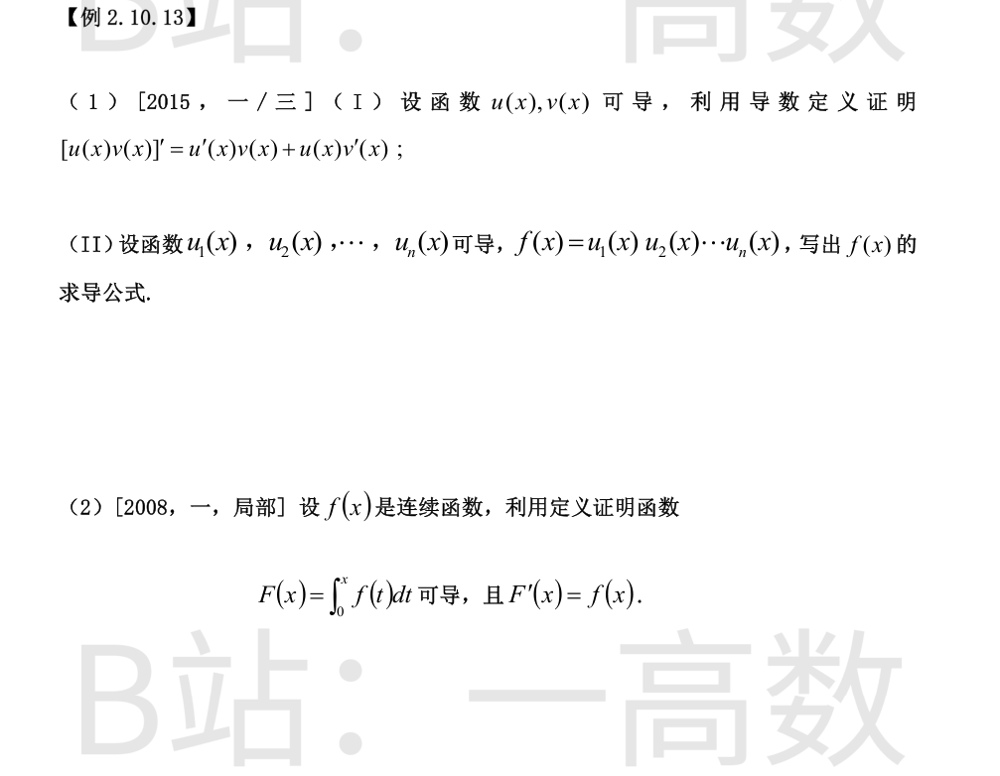

**(I)** 由定义，加减项 $u(x+h)v(x)$：
$$\bigl[u(x)v(x)\bigr]'=\lim_{h\to0}\frac{u(x+h)v(x+h)-u(x+h)v(x)+u(x+h)v(x)-u(x)v(x)}{h}$$
$$=\lim_{h\to0}\left[v(x+h)\cdot\frac{u(x+h)-u(x)}{h}+u(x)\cdot\frac{v(x+h)-v(x)}{h}\right]$$
$u,v$ 在 $x$ 处可导 $\Rightarrow$ 在 $x$ 处连续，故 $v(x+h)\to v(x)$。于是极限为
$$v(x)u'(x)+u(x)v'(x).\qquad\blacksquare$$
**(II)** 对 $n$ 用数学归纳法（对 $f=u_1(u_2\cdots u_n)$ 反复用 (I)），得
$$f'(x)=u_1'(x)u_2(x)\cdots u_n(x)+u_1(x)u_2'(x)\cdots u_n(x)+\cdots+u_1(x)u_2(x)\cdots u_n'(x)$$
即 $f'=\displaystyle\sum_{k=1}^{n}u_1\cdots u_{k-1}\,u_k'\,u_{k+1}\cdots u_n$。
对任意 $x$，考察差商
$$\frac{F(x+h)-F(x)}{h}=\frac1h\int_x^{x+h}f(t)\,dt$$
$f$ 在介于 $x$ 与 $x+h$ 之间的闭区间上连续，由积分中值定理，存在 $\xi$ 介于 $x$ 与 $x+h$ 之间，使
$$\int_x^{x+h}f(t)\,dt=f(\xi)\,h$$
于是差商 $=f(\xi)$。当 $h\to0$ 时 $\xi$ 夹在 $x$ 与 $x+h$ 之间故 $\xi\to x$，由 $f$ 连续得 $f(\xi)\to f(x)$。所以
$$\lim_{h\to0}\frac{F(x+h)-F(x)}{h}=f(x)$$
即 $F$ 在 $x$ 处可导且 $F'(x)=f(x)$。$\blacksquare$
（不引用中值定理亦可：$\left|\dfrac1h\int_x^{x+h}[f(t)-f(x)]\,dt\right|\le\sup_{t\in[x,x+h]}|f(t)-f(x)|\to0$（$h\to0^\pm$），由 $f$ 在 $x$ 连续即得。）